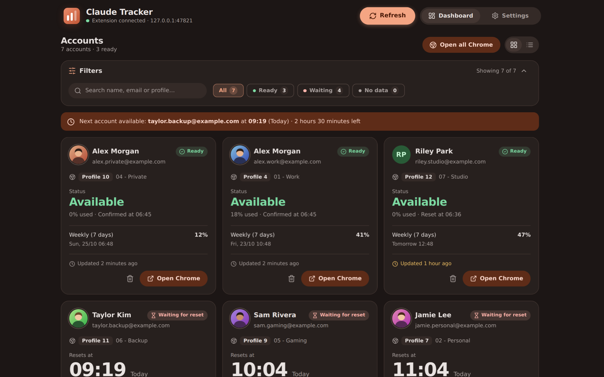
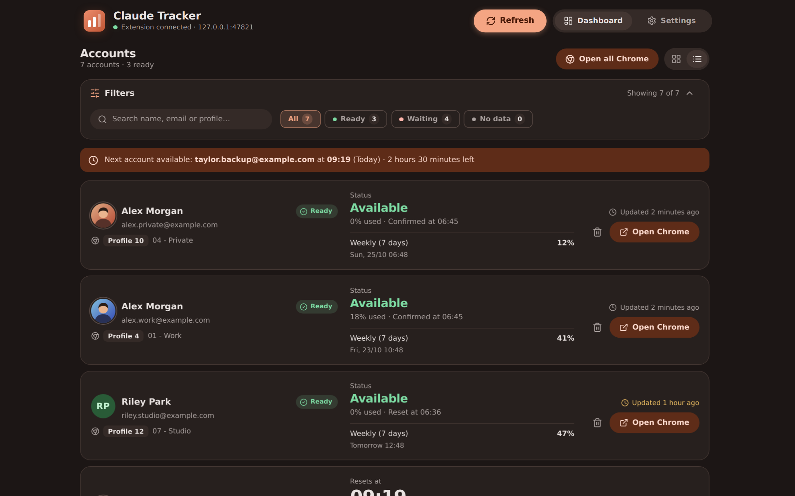
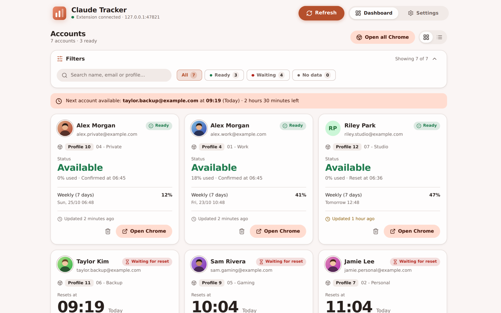
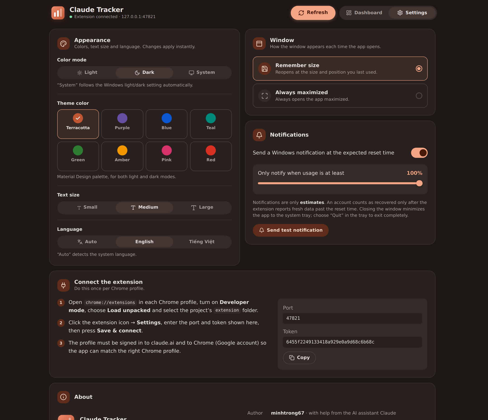

One dashboard, every profile
See all accounts side by side, each with the Chrome profile and Google account name behind it. Open the right profile in one click.
Claude Tracker is a desktop dashboard that shows usage limits and reset times for every Claude account across your Chrome profiles.
Windows 10 and 11. Your data stays on your PC.
Built for people who juggle several Claude accounts and are tired of guessing which one has capacity.
See all accounts side by side, each with the Chrome profile and Google account name behind it. Open the right profile in one click.
Hours and minutes spelled out in full, with a progress bar toward the reset.
Get nudged at the expected reset time, with a usage threshold you choose.
Switch layouts in one click. Filter by status or search by name, email and profile.
Light, dark or follow Windows, three text sizes and Material color themes. Applied instantly.
Detects your system language and switches the moment you choose another.
Reopen at the size you left it, or always start maximized.
No cloud, no sign-in. The app only listens on 127.0.0.1 with a secret token.
Download the installer and run it. Claude Tracker lives in your system tray.
Load the extension in each Chrome profile, then paste the port and token shown in Settings.
Accounts appear automatically. Pick the one that is ready and open its Chrome profile.




Claude Tracker is released under the MIT license. Read the code, fork it, fix the parser when Claude changes something.
No. Claude Tracker is an independent open-source project and is not affiliated with or endorsed by Anthropic. It reads the usage status from the claude.ai session already signed in to your own Chrome profiles.
No. The extension only reads usage limits and the account email, and sends them to 127.0.0.1 on your own computer, protected by a token.
Windows 10 and 11 (64-bit). It uses WebView2, which is built into Windows.
Claude’s internal endpoint can change. Open Settings → Raw data diagnostics to inspect the response, then adjust the parser — the project is open source.